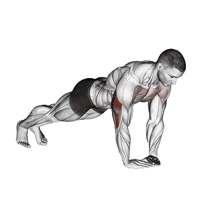

中级平均次数
一般中级训练者的参考值。
男性
24
女性
13
钻石俯卧撑平均次数
| 等级 | ||
|---|---|---|
| 初学者 | < 1 | < 1 |
| 初级者 | 8 | < 1 |
| 中级者 | 24 | 13 |
| 进阶者 | 43 | 36 |
| 菁英 | 64 | 62 |
注：这些数值是单组可完成平均次数的估算。体重、动作幅度、节奏等个人因素都可能造成差异。详细数据请参考下方表格。
钻石俯卧撑标准次数
男性按体重(kg)数据 [次数]
| 体重 | 初学者 | 初级者 | 中级者 | 进阶者 | 菁英 |
|---|---|---|---|---|---|
| 50 | < 1 | 6 | 21 | 41 | 63 |
| 55 | < 1 | 7 | 22 | 41 | 62 |
| 60 | < 1 | 8 | 23 | 41 | 61 |
| 65 | < 1 | 9 | 23 | 41 | 60 |
| 70 | < 1 | 9 | 24 | 41 | 59 |
| 75 | < 1 | 10 | 24 | 40 | 58 |
| 80 | < 1 | 10 | 24 | 40 | 57 |
| 85 | < 1 | 10 | 24 | 39 | 55 |
| 90 | 1 | 11 | 24 | 38 | 54 |
| 95 | 1 | 11 | 23 | 38 | 53 |
| 100 | 2 | 11 | 23 | 37 | 52 |
| 105 | 2 | 11 | 23 | 36 | 51 |
| 110 | 2 | 11 | 22 | 36 | 50 |
| 115 | 2 | 11 | 22 | 35 | 48 |
| 120 | 2 | 11 | 22 | 34 | 47 |
| 125 | 2 | 10 | 21 | 33 | 46 |
| 130 | 2 | 10 | 21 | 33 | 45 |
| 135 | 2 | 10 | 20 | 32 | 44 |
| 140 | 2 | 10 | 20 | 31 | 43 |
男性按年龄数据 [次数]
| 年龄 | 初学者 | 初级者 | 中级者 | 进阶者 | 菁英 |
|---|---|---|---|---|---|
| 15 | < 1 | 3 | 16 | 32 | 51 |
| 20 | < 1 | 7 | 22 | 41 | 62 |
| 25 | < 1 | 8 | 24 | 43 | 64 |
| 30 | < 1 | 8 | 24 | 43 | 64 |
| 35 | < 1 | 8 | 24 | 43 | 64 |
| 40 | < 1 | 8 | 24 | 43 | 64 |
| 45 | < 1 | 7 | 21 | 39 | 60 |
| 50 | < 1 | 5 | 18 | 35 | 54 |
| 55 | < 1 | 2 | 14 | 30 | 48 |
| 60 | < 1 | < 1 | 11 | 25 | 41 |
| 65 | < 1 | < 1 | 8 | 20 | 34 |
| 70 | < 1 | < 1 | 4 | 15 | 28 |
| 75 | < 1 | < 1 | < 1 | 10 | 22 |
| 80 | < 1 | < 1 | < 1 | 7 | 16 |
| 85 | < 1 | < 1 | < 1 | 3 | 12 |
| 90 | < 1 | < 1 | < 1 | < 1 | 8 |
女性按体重(kg)数据 [次数]
| 体重 | 初学者 | 初级者 | 中级者 | 进阶者 | 菁英 |
|---|---|---|---|---|---|
| 40 | < 1 | < 1 | 1 | 21 | 45 |
| 45 | < 1 | < 1 | 6 | 25 | 48 |
| 50 | < 1 | < 1 | 9 | 28 | 51 |
| 55 | < 1 | < 1 | 11 | 31 | 53 |
| 60 | < 1 | < 1 | 14 | 33 | 54 |
| 65 | < 1 | 1 | 15 | 34 | 55 |
| 70 | < 1 | 3 | 17 | 35 | 55 |
| 75 | < 1 | 4 | 18 | 36 | 55 |
| 80 | < 1 | 6 | 19 | 36 | 55 |
| 85 | < 1 | 7 | 20 | 36 | 55 |
| 90 | < 1 | 7 | 20 | 37 | 54 |
| 95 | < 1 | 8 | 21 | 37 | 54 |
| 100 | < 1 | 8 | 21 | 37 | 53 |
| 105 | < 1 | 9 | 21 | 37 | 53 |
| 110 | < 1 | 9 | 22 | 36 | 52 |
| 115 | < 1 | 9 | 22 | 36 | 52 |
| 120 | < 1 | 10 | 22 | 36 | 51 |
女性按年龄数据 [次数]
| 年龄 | 初学者 | 初级者 | 中级者 | 进阶者 | 菁英 |
|---|---|---|---|---|---|
| 15 | < 1 | < 1 | 8 | 26 | 49 |
| 20 | < 1 | < 1 | 12 | 35 | 60 |
| 25 | < 1 | < 1 | 13 | 36 | 62 |
| 30 | < 1 | < 1 | 13 | 36 | 62 |
| 35 | < 1 | < 1 | 13 | 36 | 62 |
| 40 | < 1 | < 1 | 13 | 36 | 62 |
| 45 | < 1 | < 1 | 11 | 33 | 58 |
| 50 | < 1 | < 1 | 9 | 29 | 52 |
| 55 | < 1 | < 1 | 7 | 25 | 46 |
| 60 | < 1 | < 1 | 4 | 20 | 40 |
| 65 | < 1 | < 1 | < 1 | 15 | 33 |
| 70 | < 1 | < 1 | < 1 | 11 | 27 |
| 75 | < 1 | < 1 | < 1 | 7 | 21 |
| 80 | < 1 | < 1 | < 1 | 4 | 15 |
| 85 | < 1 | < 1 | < 1 | < 1 | 11 |
| 90 | < 1 | < 1 | < 1 | < 1 | 8 |
注：表格中的数值是单组可完成次数的参考。按体重数据可用来估算相对负荷，按年龄数据可用来观察趋势差异。
目标肌群
| 分类 | 肌群 |
|---|---|
| 主要发力肌群 | 肱三头肌, 肱二头肌, 胸大肌 |
| 辅助肌群 | 三角肌 |
| 稳定肌群 | 腹直肌, 腹外斜肌 |
| 握力 | 无 |
用 Shiba App 记录与分析
集中查看重量、次数与进步变化。
表格说明
| 等级 | 说明 | 分布 |
|---|---|---|
| 初学者 | 掌握正确动作，并持续训练至少 1 个月。 | 后 5% |
| 初级者 | 持续规律训练至少 6 个月。 | 前 80% |
| 中级者 | 持续规律训练至少 2 年。 | 前 50% |
| 进阶者 | 持续规律训练超过 5 年。 | 前 20% |
| 菁英 | 针对该动作专项训练超过 5 年。 | 前 5% |
其他训练动作
全身
硬拉
全身 / BIG3
卧推
全身 / BIG3
深蹲
全身 / BIG3
六角杠硬拉
全身
高翻翻站
全身
罗马尼亚硬拉
全身
相扑硬拉
全身
翻挺
全身
抓举
全身
翻站
全身
翻站推举
全身
架上硬拉
全身
哑铃罗马尼亚硬拉
全身 / 哑铃
悬垂翻站
全身
直腿硬拉
全身
双力臂
全身 / 自重
高翻抓举
全身
深蹲推举
全身
借力挺举
全身
哑铃硬拉
全身 / 哑铃
垫高硬拉
全身
单脚罗马尼亚硬拉
全身
波比跳
全身 / 自重
悬垂高翻
全身
分腿挺举
全身
哑铃抓举
全身 / 哑铃
翻站高拉
全身
抓举硬拉
全身
翻站拉
全身
暂停硬拉
全身
单脚硬拉
全身
肌力抓举
全身
杰佛森硬拉
全身
抓举拉
全身
墙球
全身
泽奇硬拉
全身
单脚哑铃硬拉
全身 / 哑铃
哑铃翻站推举
全身 / 哑铃
吊环双力臂
全身 / 自重
哑铃深蹲推举
全身 / 哑铃
悬垂抓举
全身
哑铃高拉拉
全身 / 哑铃
哑铃悬垂翻站
全身 / 哑铃
背后硬拉
全身
Clap拉Up
全身
深蹲推蹬
全身
胸部
卧推
胸部 / BIG3
哑铃卧推
胸部 / 哑铃
俯卧撑
胸部 / 自重
上斜卧推
胸部
上斜哑铃卧推
胸部 / 哑铃
窄握卧推
胸部
器械夹胸
胸部 / 器械
哑铃飞鸟
胸部 / 哑铃
下斜哑铃飞鸟
胸部 / 哑铃
下斜卧推
胸部
史密斯机卧推
胸部 / 器械
绳索飞鸟
胸部 / 绳索
胸推
胸部
地板推举
胸部
上斜哑铃飞鸟
胸部 / 哑铃
哑铃地板推举
胸部 / 哑铃
下斜哑铃卧推
胸部 / 哑铃
暂停卧推
胸部
单臂俯卧撑
胸部 / 自重
反握卧推
胸部
钻石俯卧撑
胸部 / 自重
窄握哑铃卧推
胸部 / 哑铃
卧推停杠推举
胸部
宽握卧推
胸部
下斜俯卧撑
胸部 / 自重
窄握上斜卧推
胸部
上斜俯卧撑
胸部 / 自重
窄握俯卧撑
胸部 / 自重
弓箭手俯卧撑
胸部 / 自重
Spoto推举
胸部
背部
硬拉
背部 / BIG3
引体向上
背部 / 自重
俯身划船
背部
高位下拉
背部
反握引体向上
背部 / 自重
哑铃划船
背部 / 哑铃
坐姿缆绳划船
背部 / 绳索
杠铃耸肩
背部 / 杠铃
T杠划船
背部
哑铃耸肩
背部 / 哑铃
Pendlay划船
背部
器械划船
背部 / 器械
哑铃过头拉
背部 / 哑铃
哑铃反向飞鸟
背部 / 哑铃
胸托哑铃划船
背部 / 哑铃
窄握高位下拉
背部
器械反向飞鸟
背部 / 器械
反握高位下拉
背部
中立握引体向上
背部 / 自重
直臂下拉
背部
绳索反向飞鸟
背部 / 绳索
耶兹划船
背部
俯身哑铃划船
背部 / 哑铃
背部伸展
背部
卧板划船
背部
器械背部伸展
背部 / 器械
杠铃过头拉
背部 / 杠铃
单臂引体向上
背部 / 自重
哑铃卧板划船
背部 / 哑铃
反向划船
背部
叛逆划船
背部
单臂高位下拉
背部
单臂坐姿缆绳划船
背部 / 绳索
绳索直立划船
背部 / 绳索
器械耸肩
背部 / 器械
六角杠耸肩
背部
史密斯机耸肩
背部 / 器械
哑铃上斜Y字平举
背部 / 哑铃
绳索耸肩
背部 / 绳索
屈臂杠铃过头拉
背部 / 杠铃
杠铃高翻耸肩
背部 / 杠铃
梅多斯划船
背部
背后杠铃耸肩
背部 / 杠铃
反向背伸
背部
肩部
肩推
肩部
哑铃肩推
肩部 / 哑铃
哑铃侧平举
肩部 / 哑铃
军事推举
肩部
坐姿肩推
肩部
坐姿哑铃肩推
肩部 / 哑铃
器械肩推
肩部 / 器械
借力推举
肩部
直立划船
肩部
哑铃前平举
肩部 / 哑铃
绳索侧平举
肩部 / 绳索
阿诺肩推
肩部
脸拉
肩部
颈屈
肩部
哑铃直立划船
肩部 / 哑铃
器械侧平举
肩部 / 器械
颈后推举
肩部
倒立俯卧撑
肩部 / 自重
杠铃前平举
肩部 / 杠铃
圆木推举
肩部
地雷管推举
肩部
颈伸展
肩部
Z推举
肩部
维京推举
肩部
Shoulder停杠推举
肩部
哑铃Z推举
肩部 / 哑铃
单臂地雷管推举
肩部
哑铃外旋
肩部 / 哑铃
屈体俯卧撑
肩部 / 自重
哑铃借力推举
肩部 / 哑铃
哑铃脸拉
肩部 / 哑铃
绳索外旋
肩部 / 绳索
手臂
哑铃弯举
手臂 / 哑铃
杠铃弯举
手臂 / 杠铃
锤式弯举
手臂
EZ杠弯举
手臂
牧师椅弯举
手臂
绳索二头弯举
手臂 / 绳索
哑铃集中弯举
手臂 / 哑铃
上斜哑铃弯举
手臂 / 哑铃
器械二头弯举
手臂 / 器械
严格弯举
手臂
单臂绳索二头弯举
手臂 / 绳索
单臂哑铃牧师椅弯举
手臂 / 哑铃
上斜锤式弯举
手臂
蜘蛛弯举
手臂
佐特曼弯举
手臂
坐姿哑铃弯举
手臂 / 哑铃
借力弯举
手臂
绳索锤式弯举
手臂 / 绳索
过顶绳索弯举
手臂 / 绳索
上斜绳索弯举
手臂 / 绳索
仰卧绳索弯举
手臂 / 绳索
双杠臂屈伸
手臂 / 自重
三头肌下压
手臂
仰卧三头肌伸展
手臂
绳索三头Pushdown
手臂
单臂下拉
手臂
哑铃三头肌伸展
手臂 / 哑铃
三头肌伸展
手臂
仰卧哑铃三头肌伸展
手臂 / 哑铃
坐姿撑体器械
手臂 / 器械
哑铃三头肌后踢
手臂 / 哑铃
绳索过顶三头肌伸展
手臂 / 绳索
器械三头肌伸展
手臂 / 器械
坐姿哑铃三头肌伸展
手臂 / 哑铃
反握三头肌下压
手臂
JM推举
手臂
Tate推举
手臂
吊环撑体
手臂 / 自重
椅上撑体
手臂 / 自重
腕弯举
手臂
反向杠铃弯举
手臂 / 杠铃
反向腕弯举
手臂
哑铃腕弯举
手臂 / 哑铃
哑铃反向腕弯举
手臂 / 哑铃
哑铃反向弯举
手臂 / 哑铃
腿部
深蹲
腿部 / BIG3
雪橇腿举
腿部
前蹲
腿部
臀推
腿部
腿伸展
腿部
水平腿举
腿部
哈克深蹲
腿部
坐姿腿弯举
腿部
哑铃保加利亚分腿蹲
腿部 / 哑铃
高脚杯深蹲
腿部
仰卧腿弯举
腿部
器械提踵
腿部 / 器械
哑铃弓步
腿部 / 哑铃
箱式深蹲
腿部
自重深蹲
腿部
垂直腿举
腿部
保加利亚分腿蹲
腿部
坐姿提踵
腿部
史密斯机深蹲
腿部 / 器械
髋外展
腿部
早安式
腿部
泽奇深蹲
腿部
杠铃弓步
腿部 / 杠铃
髋内收
腿部
过头深蹲
腿部
杠铃提踵
腿部 / 杠铃
哑铃深蹲
腿部 / 哑铃
分腿蹲
腿部
哑铃提踵
腿部 / 哑铃
绳索缆绳拉臀
腿部 / 绳索
站姿腿弯举
腿部
地雷管深蹲
腿部
杠铃反向弓步
腿部 / 杠铃
杠铃臀桥
腿部 / 杠铃
单脚推举
腿部
雪橇推举提踵
腿部
单脚深蹲
腿部
Belt深蹲
腿部
安全杠深蹲
腿部
手槍深蹲
腿部
暂停深蹲
腿部
杠铃哈克深蹲
腿部 / 杠铃
相扑深蹲
腿部
绳索后踢
腿部 / 绳索
自重提踵
腿部
弓步
腿部
臀桥
腿部
停杠深蹲
腿部
行走弓步
腿部
哑铃前蹲
腿部 / 哑铃
哑铃分腿蹲
腿部 / 哑铃
反向弓步
腿部
深蹲跳
腿部
北欧腿后腱弯举
腿部
西西深蹲
腿部
半程深蹲
腿部
臀腿抬举
腿部
绳索腿屈伸
腿部 / 绳索
单脚坐姿提踵
腿部
Side弓步
腿部
臀部后踢
腿部
驴式提踵
腿部
哑铃行走提踵
腿部 / 哑铃
侧抬腿
腿部 / 自重
杰佛森深蹲
腿部
地板髋外展
腿部
髋伸展
腿部
地板髋伸展
腿部
核心
仰卧起坐
核心 / 自重
绳索卷腹
核心 / 绳索
坐姿机械卷腹
核心 / 器械
卷腹
核心 / 自重
哑铃侧弯
核心 / 哑铃
缆绳伐木式转体
核心 / 绳索
悬垂抬腿
核心 / 自重
俄罗斯转体
核心 / 自重
仰卧抬腿
核心 / 自重
下斜仰卧起坐
核心 / 自重
悬垂提膝
核心 / 自重
健腹轮
核心
脚尖碰杠
核心 / 自重
下斜卷腹
核心 / 自重
开合跳
核心 / 自重
脚踏車卷腹
核心 / 自重
反向卷腹
核心 / 自重
打水Kicks
核心 / 自重
登山者
核心 / 自重
高位滑轮卷腹
核心 / 自重
站姿绳索卷腹
核心 / 绳索
超人式
核心 / 自重
侧腹卷腹
核心 / 自重
罗马椅侧弯
核心
剪刀脚
核心 / 自重